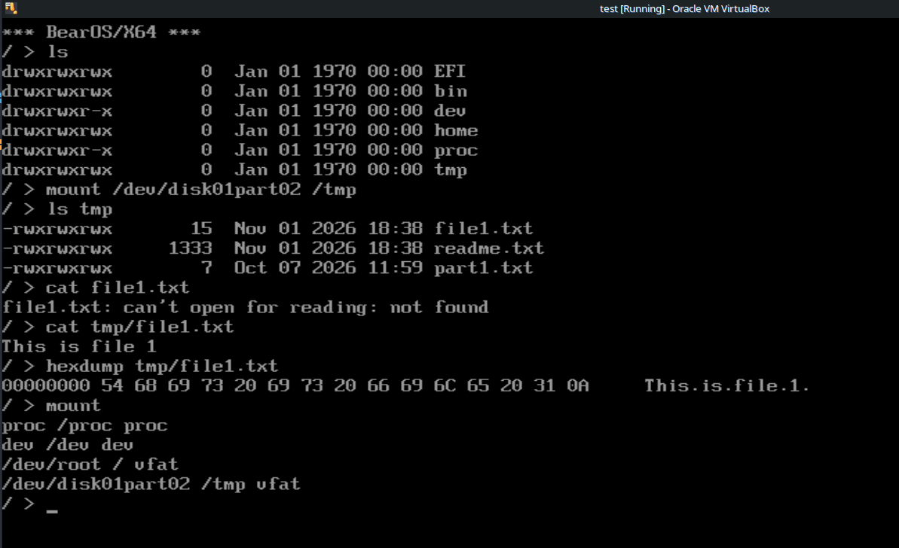

Can we implement a complete operating system as an EFI bootloader? Would we want to?

I’ve been a Linux user and developer for a long, long time – since a Linux distribution was delivered to my office in a shoe-box full of floppy disks. I’m a Linux supporter and advocate, and I can’t imagine using anything else for my day-to-day computing needs.
And, yet…
Linux is getting increasingly complicated, unwieldy, and resource-intensive; frankly, it’s getting less and less appealing to enthusiasts. These changes are driven, I believe, by a misguided notion common to folks with commercial interests in Linux: the idea that, one day, desktop Linux will be used by ordinary people. You know – people who don’t count in hexadecimal for preference.
I don’t particularly want Linux to have a mass-market appeal – I want to it to remain the way it began, as a hacker’s toy. Don’t get me wrong: I don’t object in principle to Linux having a wider user base. Quite the opposite. What I object to is Linux being turned gradually into a free version of Windows to support this objective. Frankly, I find my enthusiasm for the whole Linux enterprise to be waning.
However, there’s no practical alternative, for those of us who don’t want to embrace the mega-corps. Arguably, the *BSD operating systems are enough like Linux to be subject to the same kinds of problems. There are niche operating systems like HaikuOS – but these, too, are derived from older products that had a measure of traction back in the day. They aren’t really novel.
Why is no competition to Linux appearing? It’s been around for a long time, after all. The fact is that it’s bloody hard to develop and maintain an operating system. Microsoft Windows has the backing of a giant corporation, and the vast resources this entails. Linux is the result of the efforts of thousands of people over decades.
Why is it so hard to develop an operating system?
One of the main problems is providing support for all the hardware we might want use. There are dozens of different disk controllers, display devices, network adapters, USB controllers, and audio chips, not to mention the more exotic hardware. If it’s to get any traction, a new operating system will have to support at least the most common of these.
This is where EFI (or UEFI) looks interesting. The EFI firmware of a PC-like computer is provided by the motherboard manufacturer, and includes built-in drivers for much of the installed hardware. As a minimum it will support the built-in storage controller, along with USB-based storage. It will provide a Unicode-capable console, and usually a graphical display as well. Nearly always it will support a mouse or other pointer, either built-in or connected via USB. Some implementations have TCP/IP networking support.
In short, EFI provides relatively straightforward access to much of the hardware that an operating system needs to manage on behalf of applications. If an operating system targets EFI-capable computers, then the its developer will find much of the low-level hardware interfacing already done. It might be possible, in fact, to implement a serviceable, end-user operating system, without needing to know anything about interrupts, or ports, or voltage levels.
If that’s true, then EFI should provide the operating-system developer with a huge head-start, and make the whole process easier.
But is it true? I tried to find out.
Introducing BearOS
The Basic Embedded All-purpose Retro Operating System (BearOS) is a proof-of-concept retro-style operating system for microcontrollers. I originally developed it for the Raspberry Pi Pico but, to be honest, there hasn’t been a lot of interest. BearOS is a single-user, single-tasking system, philosophically similar to MS/DOS, but with a broadly POSIX-compatible programming API. It provides a command-line shell and a bunch of simple utilities that behave much like their Linux counterparts. However, this similarity with Linux is only for the sake of familiarity – BearOS has nothing at all in common with Linux internally.
I have to stress that BearOS is only a proof-of-concept. It doesn’t provide anything that a real desktop computer would offer, like a graphical user interface or networking. However, it does show that a microcontroller can run a broadly familiar operating system, and do what an operating system must: load and run programs, and abstract hardware.
So, over the course of a few evenings, I worked on porting BearOS to x64 computers with EFI. It wasn’t all that difficult because, as I suspected, most of the hardware-level heavy lifting was already being done by EFI.
Here’s what it looks like, running in a VirtualBox virtual machine; it boots from a USB flash drive on real hardware, too.

If anybody is interested, the source code for BearOS/EFI is available from my GitHub repository.
Again, I have to stress that the Linux-like console appearance is purely for familiarity – there’s no Linux here.
So: EFI or not?
We need to keep in mind that EFI is not designed to host an operating system: its purpose is to load an operating system, and then get out of the way. In fact, by default EFI auto-reboots if an operating system hasn’t started within five minutes. This behaviour is easy to change in code, but it reflects EFI’s design goals. Still, clearly EFI can host an operating system – a simple one, in this case, but it could easily be expanded.
EFI is relatively easy to program for, particularly for storage access. In fact, EFI doesn’t support only block storage: it has some understanding of files as well. I wrote about EFI’s file API in an earlier article. While the EFI specification only requires support for VFAT (DOS/Windows) filesystems, that might be enough to get started: an EFI-based operating system might not even need to be able to parse a filesystem – at least, not at first.
In practice, EFI’s VFAT support is pretty limited. While it understands the notion of a directory, it can’t create new directories, or remove directories. In practice, I found that I had to include a VFAT driver in BearOS/EFI. That’s not a problem, because there are plenty of open-source VFAT implementations, and it’s well documented. However, this does hint that EFI might not offer the advantages it first seems to.
Although BearOS does not support a graphical user interface at present, I know that EFI will provide access to a graphical display and a pointer device when the time comes. Adding GUI support won’t be blocked by needing to implement a range of video drivers.
Again, though, access to the video display via EFI is pretty rudimentary. In particular, it doesn’t offer much in the way of hardware acceleration. Still, it would provide a good starting point for a GUI.
The real problem in developing a new, EFI-based operating system will lie in handling common hardware that isn’t covered by EFI at all. In particular, EFI doesn’t provide any audio services, and very few EFI implementations support Wifi networking. My ThinkPad laptop does have support for TCP/IP over wired ethernet, but who uses that in the home these days? Well, I do; but I suspect it’s relatively unusual.
There is interest in extending the EFI specification to include Wifi, but I’m not what the scope of support will be. That is, I don’t know whether it will include general access to the Internet, or will just be for downloading a boot image.
Another common peripheral that EFI doesn’t support is an audio DAC. There’s no easy way to play audio from an EFI-based application.
So, given that EFI doesn’t really support networking or audio – things that most desktop users will want – what can we do? We probably can’t do hardware access outside of EFI services – it’s difficult for an EFI application to handle interrupts or do direct memory access (DMA).
However, EFI has its own driver architecture. It’s possible for an application (or operating system) to create new drivers, and register them with EFI. Unfortunately, there’s little documentation on this process, and few practical examples. It isn’t clear to me how writing an EFI driver compares, for example, with writing a Linux kernel driver.
In short, the use of EFI does provide a bit of a head-start to an operating system developer, in that it abstracts access to a lot of the really fundamental hardware that the operating system will need to manage. But it doesn’t handle all of it, and the developer will, eventually, have to tackle driver development. So quite how much a head-start the use of EFI offers isn’t entirely clear.
Closing remarks
I was able to implement a rudimentary, DOS-like operating system with a modern programming API for EFI-based PCs in a few evenings. I’ve found it relatively straightforward to port Linux command-line utilities to it, and even some larger applications.
However, I suspect the main bulk of driver development remains to be done. Wifi, in particular, would be nasty. How much of a leg-up EFI really offers the developer isn’t all that clear.
Moreover, targeting EFI so closely means that the new operating system will only ever support PCs with EFI-based hardware. To be fair, almost all desktop and laptop computers with Intel-like processors do fall into this category, but they aren’t the entirety of the computing world.
If EFI provided services for Wifi networking and audio, I think the situation would be quite different. Then it really would be practicable to develop a workable desktop application, without needing to get involved in much driver development.
In short – an interesting idea, but I doubt I shall be following it up.
Have you posted something in response to this page?
Feel free to send a webmention
to notify me, giving the URL of the blog or page that refers to
this one.